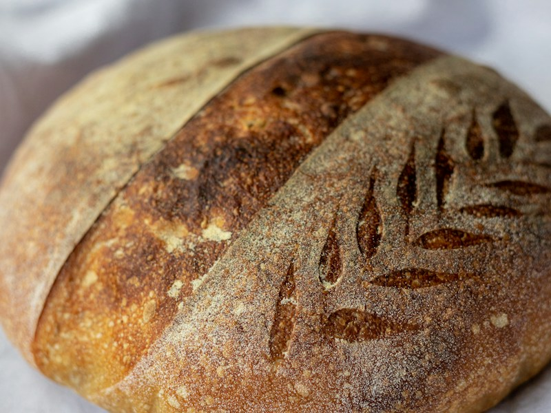

Bath, England
Country Sourdough
Our founding loaf — stoneground white and wholemeal flour, wild-leavened over 36 hours for a deep blistered crust and open, custardy crumb.
Bake it at home
Country Sourdough
400g strong white flour · 100g wholemeal · 360g water · 100g active starter · 10g salt
- Mix the flours and water, rest 1 hour, then work in the starter and salt.
- Stretch and fold four times over 2 hours; leave until risen by about half.
- Shape, proof overnight in the fridge, and bake in a lidded pot at 240°C: 20 min covered, 25 uncovered.
- Avocado toast with chilli
- Panzanella
- Ribollita